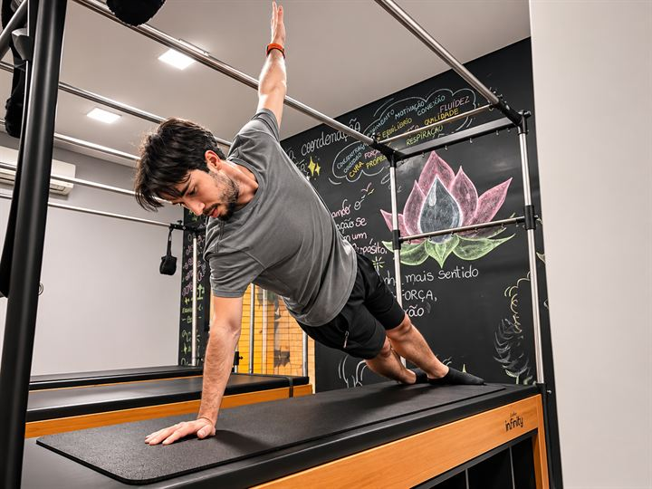
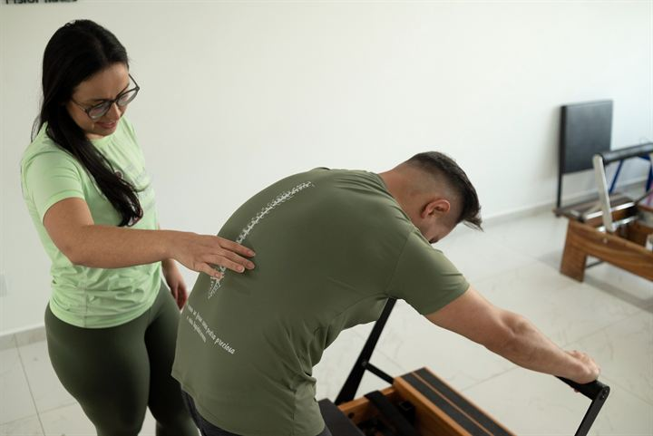
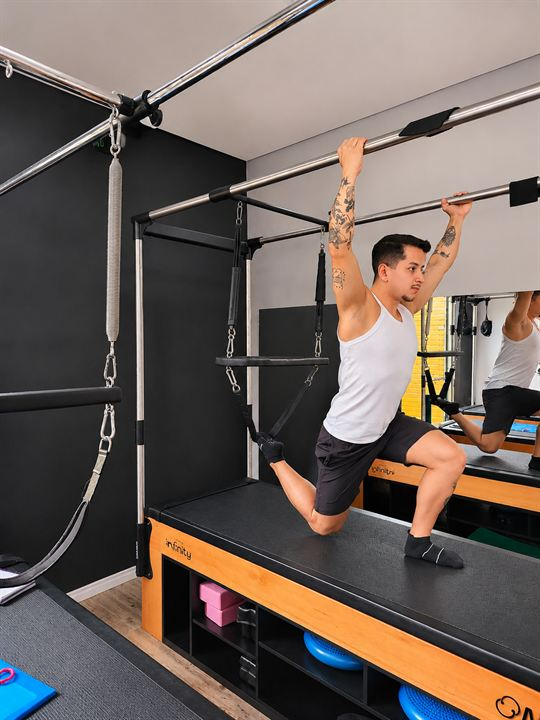
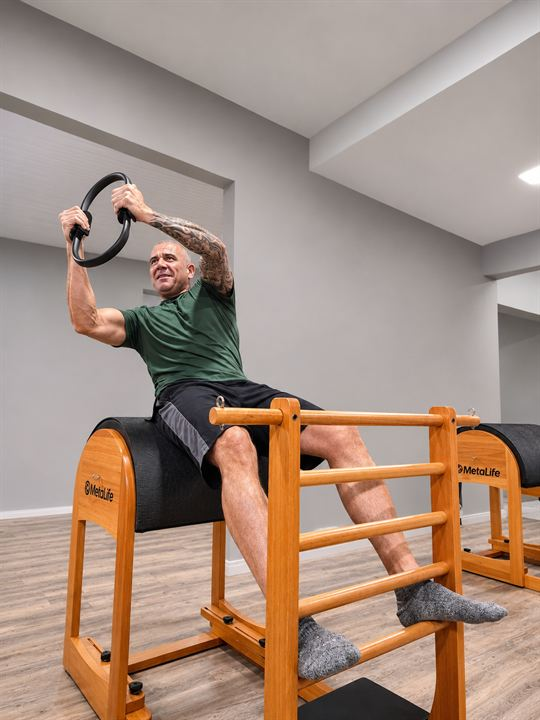

Dor por postura e horas sentado, depois da avaliação.
Pilates para homens · Joinville
Pilates para homens em Joinville.
Pilates para homens é força, controle, mobilidade e postura, com aula acompanhada. Na Lótus FisioPilates, o método atende quem convive com dor por postura no trabalho, quem volta de uma lesão, quem quer render melhor no esporte ou na musculação, e quem busca mais vitalidade, mobilidade e autonomia. O pilates é no Anita Garibaldi, Rua Anita Garibaldi, 293, e no Vila Nova, Rua São Firmino, 88. De segunda a sexta, das 06:00 às 21:00.
Anita Garibaldi Rua Anita Garibaldi, 293
Vila Nova Rua São Firmino, 88
06:00–21:00 Segunda a sexta

O que o pilates é
Força, controle e postura, com aula acompanhada.
O pilates trabalha força, controle, mobilidade e postura. Na Lótus FisioPilates, a aula é acompanhada e individualizada: o profissional conduz o exercício no Cadillac, no reformer, no ladder barrel e nos outros aparelhos. O estímulo segue o momento de cada homem, depois da avaliação.
Homens usam o método para aguentar o trabalho com menos dor, para voltar de uma lesão, para render melhor no esporte e na musculação, e para manter mobilidade e autonomia com o passar dos anos. A aula avaliativa organiza esse caminho, no Anita Garibaldi e no Vila Nova.
A cidade e os bairros estão na página de pilates em Joinville. Quem convive com dor nas costas encontra o caminho na página de pilates para dor nas costas. O treino de força e definição está na página de pilates para condicionamento físico.

Trabalho e lesão
Dor por postura no trabalho, e retorno depois de lesão.
Horas sentado, em pé ou numa posição repetida cobram a lombar, a cervical e o ombro. A Lótus FisioPilates escuta esse caso na aula avaliativa e ajusta o pilates à dor de postura. A reabilitação com o método pilates acontece no Anita Garibaldi e no Vila Nova.
Depois de uma lesão, o caminho também começa pela avaliação. Hérnia de disco, ciático, joelho e ombro entram nessa escuta, sem promessa de que a dor desapareça para toda pessoa. A fisioterapia e as terapias manuais são atendidas no estúdio do Anita Garibaldi.
- Dor lombar, cervical e ombro ligados ao trabalho
- Retorno depois de lesão, com avaliação antes do exercício
- Pilates nas duas sedes; fisioterapia e terapias manuais no Anita Garibaldi

Esporte e musculação
Performance no esporte e na musculação.
O pilates entra junto com a musculação, a corrida e outros esportes. Organiza postura, centro do corpo e mobilidade para o homem render melhor no treino que já faz. A aula é acompanhada e individualizada, no Anita Garibaldi e no Vila Nova.
O método não substitui a academia. Ele complementa o treino. Quem quiser o pilates como atividade principal de força e condicionamento segue na página de condicionamento físico.
- Complemento de musculação, corrida e outros esportes
- Centro do corpo, postura e mobilidade a serviço do treino
- Aula acompanhada para quem já treina

Maturidade
Vitalidade, mobilidade e autonomia.
Homem mais velho faz pilates na Lótus FisioPilates para manter mobilidade, vitalidade e autonomia no dia a dia. A aula é acompanhada e segue o ritmo da pessoa: levantar, caminhar, carregar e ocupar a rotina com mais segurança.
O pilates é no Anita Garibaldi, Rua Anita Garibaldi, 293, e no Vila Nova, Rua São Firmino, 88. De segunda a sexta, das 06:00 às 21:00.
- Mobilidade para o movimento do dia
- Força no ritmo de cada pessoa
- Aula acompanhada nas duas sedes
Complemento de esporte e musculação.
Mobilidade e vitalidade no ritmo da pessoa.
Dúvidas frequentes
Pilates para homens, na prática.
Pilates é coisa de mulher?
Homens fazem pilates na Lótus FisioPilates, em Joinville. O método trabalha força, controle, mobilidade e postura nos aparelhos, com aula acompanhada e individualizada. O estúdio fica no Anita Garibaldi, Rua Anita Garibaldi, 293, e no Vila Nova, Rua São Firmino, 88, de segunda a sexta, das 06:00 às 21:00.
Pilates para homens ajuda dor nas costas e dor lombar?
Pode ajudar, depois da aula avaliativa. A Lótus FisioPilates atende homem com dor nas costas e dor lombar com pilates no Anita Garibaldi, Rua Anita Garibaldi, 293, e no Vila Nova, Rua São Firmino, 88. A reabilitação com o método pilates é nas duas sedes. A fisioterapia e as terapias manuais são no estúdio do Anita Garibaldi. O detalhe está na página de pilates para dor nas costas.
Pilates serve para quem trabalha sentado e sente dor por postura?
Serve. Homem que passa o dia sentado, em pé ou em posição repetida e chega com dor na lombar, na cervical ou no ombro entra na avaliação. A prática é ajustada na Lótus FisioPilates, no Anita Garibaldi ou no Vila Nova, de segunda a sexta, das 06:00 às 21:00.
Pilates ajuda homem com hérnia de disco, ciático, dor no joelho ou no ombro?
O caso passa pela aula avaliativa, sem começar por conta própria. Hérnia de disco, ciático, dor no joelho e dor no ombro são motivos de quem procura a Lótus FisioPilates em Joinville. O profissional escuta o caso antes de indicar pilates, nas duas sedes, ou fisioterapia e terapias manuais, no Anita Garibaldi. Não há promessa de que a dor desapareça para toda pessoa.
Pilates serve depois de uma lesão?
Pode servir, depois da avaliação. A reabilitação com o método pilates é no Anita Garibaldi, Rua Anita Garibaldi, 293, e no Vila Nova, Rua São Firmino, 88. A fisioterapia e as terapias manuais são no estúdio do Anita Garibaldi. O horário é de segunda a sexta, das 06:00 às 21:00.
Pilates combina com musculação e com esporte?
Combina. O pilates entra como complemento da musculação, da corrida e de outros esportes: postura, centro do corpo e mobilidade para render melhor no treino. Na Lótus FisioPilates a aula é acompanhada e individualizada, no Anita Garibaldi e no Vila Nova. O caminho do treino está na página de condicionamento físico.
Pilates substitui a academia?
Não substitui a musculação. O pilates entra junto, como complemento, e organiza postura, centro do corpo e mobilidade para o treino. Quem faz do pilates a atividade principal encontra esse caminho na Lótus FisioPilates, no Anita Garibaldi, Rua Anita Garibaldi, 293, e no Vila Nova, Rua São Firmino, 88.
Homem mais velho pode fazer pilates para ter mais mobilidade e autonomia?
Pode. Homem mais velho faz pilates na Lótus FisioPilates para mobilidade, vitalidade e autonomia no dia a dia. A aula é acompanhada e segue o ritmo da pessoa, no Anita Garibaldi, Rua Anita Garibaldi, 293, e no Vila Nova, Rua São Firmino, 88, de segunda a sexta, das 06:00 às 21:00.
Onde fazer pilates para homens em Joinville?
Na Lótus FisioPilates. No Anita Garibaldi, Rua Anita Garibaldi, 293, com pilates, fisioterapia e terapias manuais. No Vila Nova, Rua São Firmino, 88, com pilates. De segunda a sexta, das 06:00 às 21:00.
Como agendar pilates para homens em Joinville?
Pelo WhatsApp +55 47 99289-7343, de segunda a sexta, das 06:00 às 21:00. Diga se prefere o Anita Garibaldi, Rua Anita Garibaldi, 293, ou o Vila Nova, Rua São Firmino, 88.
Como chegar
Duas sedes em Joinville.
Pilates para homens no Anita Garibaldi e no Vila Nova. Fisioterapia e terapias manuais no estúdio do Anita Garibaldi. Segunda a sexta, das 06:00 às 21:00.
Pilates, fisioterapia e terapias manuais
Pilates
- Horários
- Segunda a sexta, das 06:00 às 21:00
- +55 47 99289-7343
- @lotusfisiopilatesjlle
Anita Garibaldi
Rua Anita Garibaldi, 293
Pilates, fisioterapia e terapias manuais · 06:00 às 21:00
Abrir no Google Maps